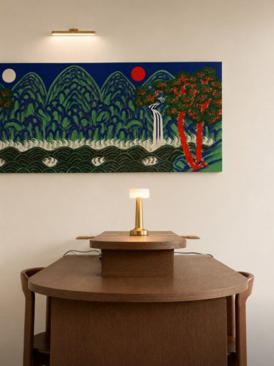
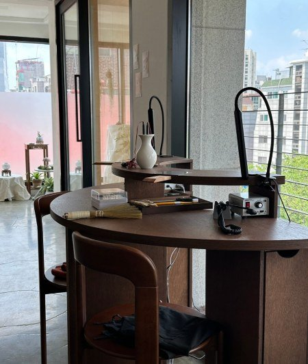
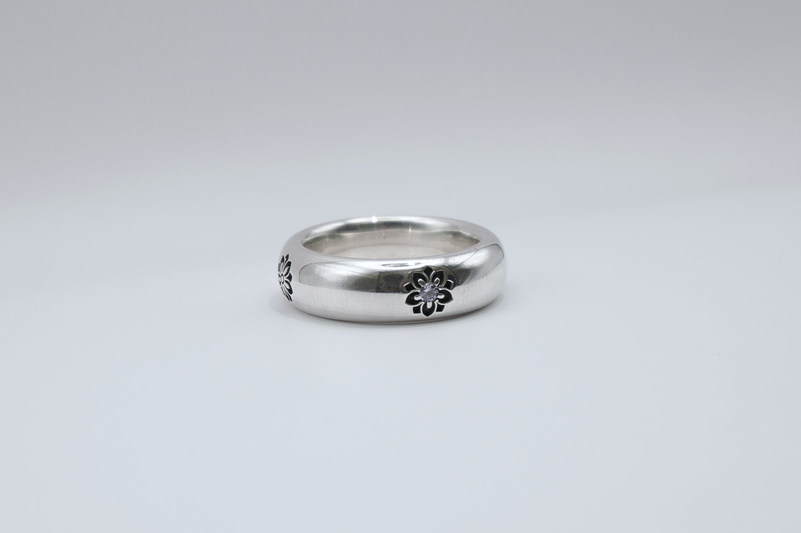
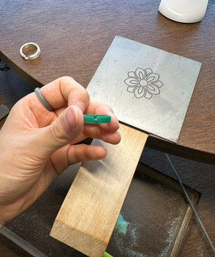
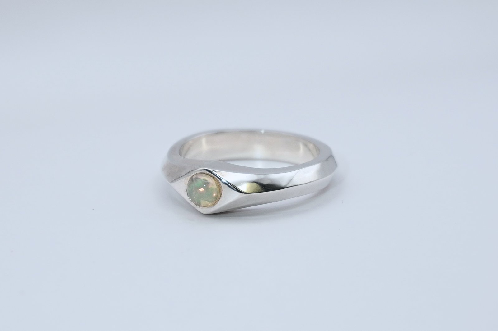

「 사주 명리 · 반지 공방 」
당신의 사주에서 찾은 반지,
손끝으로 완성하다
온명(溫明)은 홍대에 자리한 반지 공방으로,
사주 명리학의 일주(日柱)를 바탕으로 당신에게 맞는 디자인을 찾고,
직접 제작까지 함께합니다.
「 브랜드 스토리 」
나에게 맞는 것을 찾는 일

같은 디자인이라도 누군가에게는 잘 어울리고, 누군가에게는 그렇지 않습니다. 온명은 “나에게 맞는 것”이 무엇인지 고민하는 사람들을 위해 시작됐습니다. ‘따뜻하고 밝다(溫明)’는 이름처럼, 태어난 날이 가진 고유한 성향을 반지에 담아 제안하고, 그 제안에서 끝나지 않습니다. 상담을 통해 디자인을 정하고, 원석을 고르고, 직접 두드리고 다듬어 하나의 반지로 완성하는 과정까지 — 온명은 그 모든 순간을 함께합니다.
「 온명이 다른 점 」
세 가지 약속

사주 기반 맞춤 추천
60갑자 일주 리포트로 당신의 성향에 맞는 디자인과 원석을 제안합니다.

홍대 공방에서 직접 제작
추천에서 그치지 않고, 상담부터 세공까지 온명 스튜디오에서 함께 만듭니다.

오래 가는 디자인
유행을 따르기보다, 당신의 이야기와 함께 남을 디자인을 만듭니다.